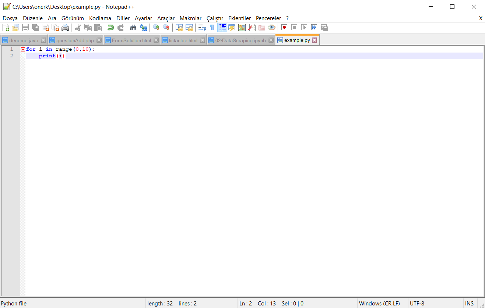

How to Install Python
You can download the appropriate version of python (I will use 3.6.x, you need to find a suitable version for your operating system) and quickly install it by clicking next,next,next... After that enter the terminal of your computer, for Windows write cmd to the search bar, for Mac OS and Linux search for terminal. Then write "python" in command line and enter. A text like this should show up in terminal if you installed it correcly.

Now, because python is a scripting language you are ready to write your code. Every time you enter a line computer will execute it. You can use that opportunity to try out some codes quickly however it is not a good idea to make your projects in terminal. Therefore we will use a text editor, compiler, to write our code more properly and to be able to save our projects. Download links of Python and text editors can be found in the downloads section.
Alternative Text Editors
Python IDLE
It is the Python's official text editor. Very simple and useful. I will continue the tutorial with this editor however you can also try and use other text editors. You can either make your code instantaneously executed or compile it before execute it. 1)Scripting 2)Text Editor


PyCharm
It is also a very good editor, however I use PyCharm while I am developing bigger projects. It has more functions and tools than Python IDLE and also I like its design. You should definitely try PyCharm, installing modules and libraries is very easy and it is easier to organize your project in PyCharm.

Sublime Text
Sublime Text's design is very cool, it gives you the motivation for coding. Also, its side bar really helps you organizing your folders and project. Sublime Text can be used for a lot of languages such as HTML and CSS as I use. You can download a special plugin for python however, becuase it isn't designed specifically for Python it won't be as efficient as PyCharm

Notepad
Everybody loves Notepad! Every windows comes with Notepad installed, you can write your Python code in a notepad. Then you can execute it from terminal. It can be used in emergencies but don't make habit out of it! First you need to acces the folder where your code is located. You can execute it with "python example.py". Here is a example.

Notepad++
It looks like notepad however, it has more functions. I don't prefer notepad++ because its auto-color for codes aren't decent and again you need to execute your code from terminal.
